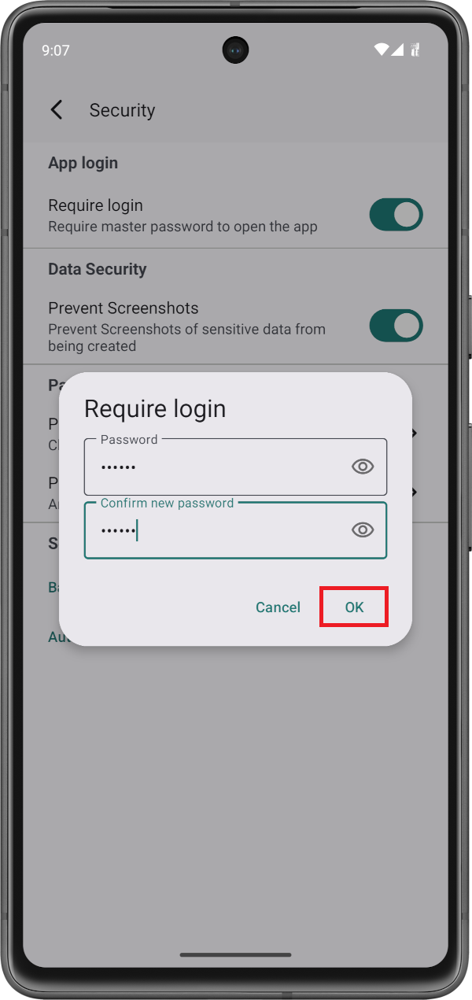
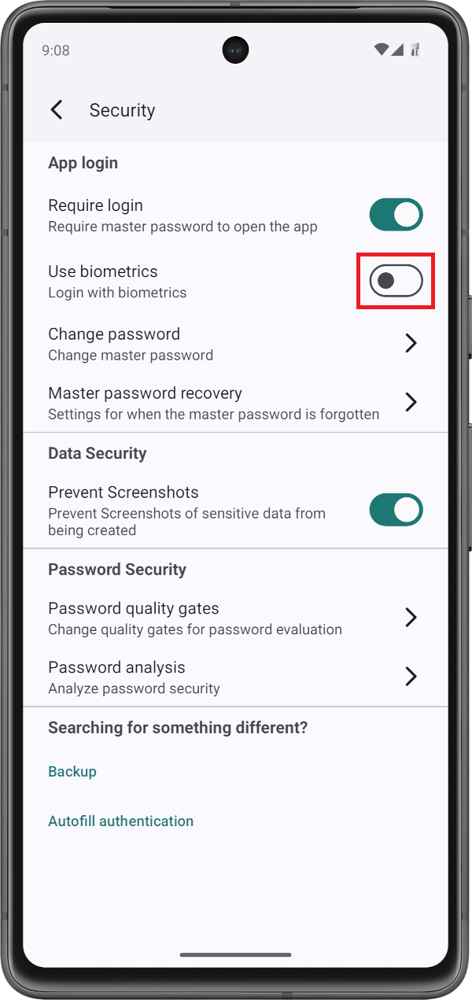
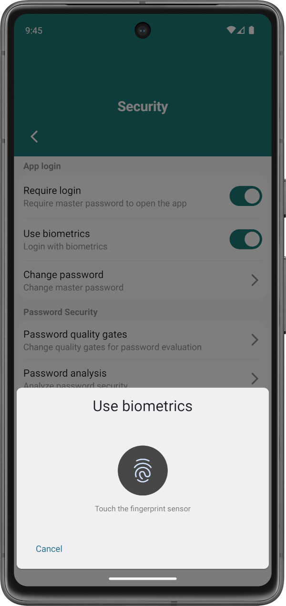

Erhöhe die Sicherheit von sensiblen Daten in Passwort Vault, indem du den App-Login über ein Master- Passwort aktivierst.
Um den Login zu aktivieren, gehe zu Einstellungen > Sicherheit und klicke auf den Login verwenden-Schalter:

Dadurch wird ein Dialogfenster geöffnet, in welchem das Master-Passwort festgelegt werden kann. Gebe ein Passwort ein und bestätige dieses. Klicke anschließend auf den Okay-Knopf:
Hierdurch wird der App-Login aktiviert. Das eingegebene Master-Passwort wird bei jedem Appstart benötigt. Vergesse das Passwort unter keinen Umständen, da es nicht automatisch zurückgesetzt werden kann!
Wenn dein Android-Smartphone biometrische Sensoren hat, können diese für den App-Login verwendet werden. Klicke dazu auf den Biometrie verwenden-Schalter:
Bestätige danach deine Identität mittels des biometrischen Logins:
